| 1. 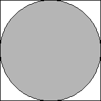 | 2.
| 3.
| ||
| s = 2 Trivial. | s = 2 + √2 = 3.414+ Trivial. | s = 2 + 1/√2 + √6/2 = 3.931+ Trivial. |
4.
| 5.
| 6.
| ||
| s = 4 Trivial. | s = 2 + 2√2 = 4.828+ Trivial. | s = 2 + 12/√13 = 5.328+ Proved by Graham in 1963. |
7.
| 8.
| 9. 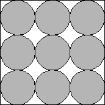 | ||
| s = 4 + √3 = 5.732+ Proved by Schaer in 1964. | s = 2 + √2 + √6 = 5.863+ Proved by Schaer/Meir in 1964. | s = 6 Proved by Schaer in 1964. |
| 10. 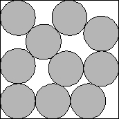 | 11. 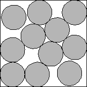 | 12. 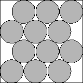 | ||
| s = 6.747+ Proved by De Groot in 1990. | s = 7.022+ Proved by Peikert in 1991. | s = 2 + 15√(2/17) = 7.144+ Proved by Peikert in 1991. |
| 13. 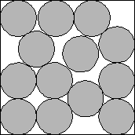 | 14. 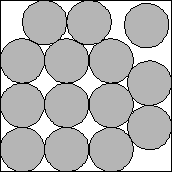 | 15. 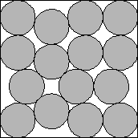 | ||
| s = 7.463+ Proved by Peikert in 1991. | s = 6 + √3 = 7.732+ Proved by Wengerodt in 1987. | s = 4 + √2 + √6 = 7.863+ Proved by Peikert in 1991. |
| 16. 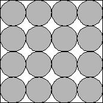 | 17. 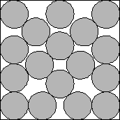 | 18. 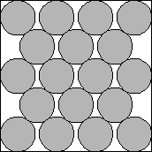 | ||
| s = 8 Proved by Wengerodt in 1983. | s = 8.532+ Proved by Peikert in 1991. | s = 2 + 24/√13 = 8.656+ Proved by Peikert in 1991. |
| 19. 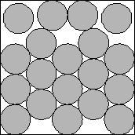 | 20. 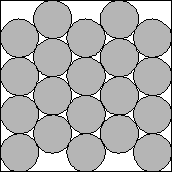 | 21. 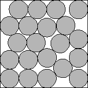 | ||
| s = 8.907+ Proved by Peikert in 1991. | s = 130/17 + 16/17√2 = 8.978+ Proved by Peikert in 1991. | s = 9.358+ |
| 22. 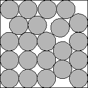 | 23. 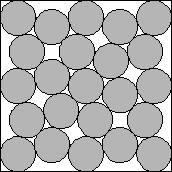 | 24. 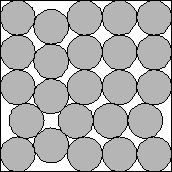 | ||
| s = 9.463+ | s = 2 + 2√2 + 2√6 = 9.727+ | s = 6 + √2 + √6 = 9.863+ |